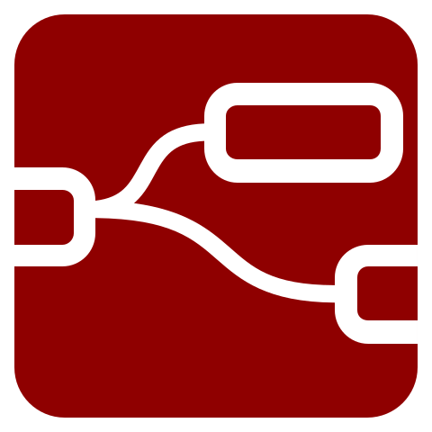
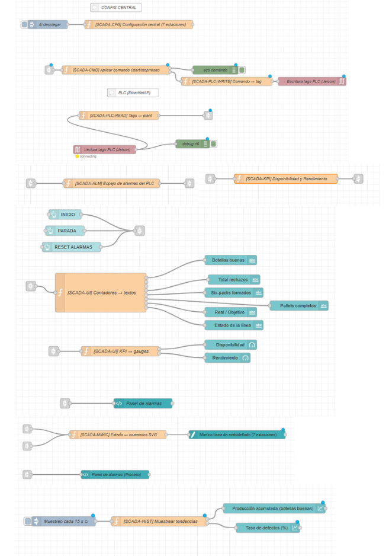

Para integrar los diferentes componentes del proyecto se desarrolló una arquitectura de comunicación utilizando Node-RED, plataforma que actúa como middleware entre el PLC, el Gemelo Digital, la simulación robótica y los sistemas de supervisión. Como resultado de esta integración se implementó un sistema SCADA que permite monitorear el estado de la línea de producción en tiempo real, visualizar indicadores de desempeño y gestionar alarmas desde una interfaz centralizada.

Middleware de Integración

Node-RED es una plataforma de programación basada en flujos que facilita la comunicación entre dispositivos, aplicaciones y servicios. En este proyecto se empleó para integrar el PLC, Siemens NX, ABB RobotStudio, Azure y el sistema SCADA, permitiendo el intercambio de información en tiempo real y la supervisión centralizada de la línea automatizada.
Comunicación entre PLC, simuladores, bases de datos y servicios externos.
Gestión de variables, eventos y flujo de información del proceso.
Base para la implementación del sistema SCADA y monitoreo en tiempo real.

El siguiente flujo representa la arquitectura implementada en Node-RED para gestionar el intercambio de información entre el PLC, Siemens NX, ABB RobotStudio, Azure y el sistema SCADA, centralizando la comunicación entre todos los componentes del proyecto.


El sistema SCADA desarrollado permite supervisar el funcionamiento de la línea automatizada mediante tres pantallas especializadas, proporcionando información del proceso en tiempo real, alarmas, indicadores de desempeño y tendencias históricas.

Visualización del estado global de la línea, producción, indicadores en tiempo real y alarmas.

Mímico del proceso con estados de cada estación, flujo de producción y alarmas activas.

Tendencias de las últimas 24 horas, producción, defectos e indicadores históricos.

La integración desarrollada mediante Node-RED y el sistema SCADA permite centralizar la información generada por todos los componentes del proyecto, facilitando la supervisión, el monitoreo y el análisis del proceso de manufactura. Esta arquitectura constituye la base de la solución de Industria 4.0 implementada, al conectar el Gemelo Digital, el PLC, la celda robotizada y las herramientas de análisis para proporcionar información en tiempo real que apoye la toma de decisiones y la gestión de la producción.